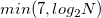

ウェーブレットスムージングを使って、信号をスムージングするために、Originは最初に、1Dのウェーブレット分解を使って、信号をいくつかの近似係数と詳細係数に分解します。そして、詳細係数の部分は0にセットされます。最後に、スムージングした信号を得るために、切りつめられた詳細係数と近似係数に対して逆ウェーブレット変換が実行されます。
複数レベルの1Dウェーブレット分解は、近似係数を連続的に分解する処理です。レベルは、分解が難解実行されるかを決めます。そして、ウェーブレットスムージングXファンクションは、によって計算され、 ここで、 N は、入力信号の長さです。
このXファンクションで使われるウェーブレット分解と再構成は、NAG関数 nag_dwt() and nag_idwt()で計算されます。